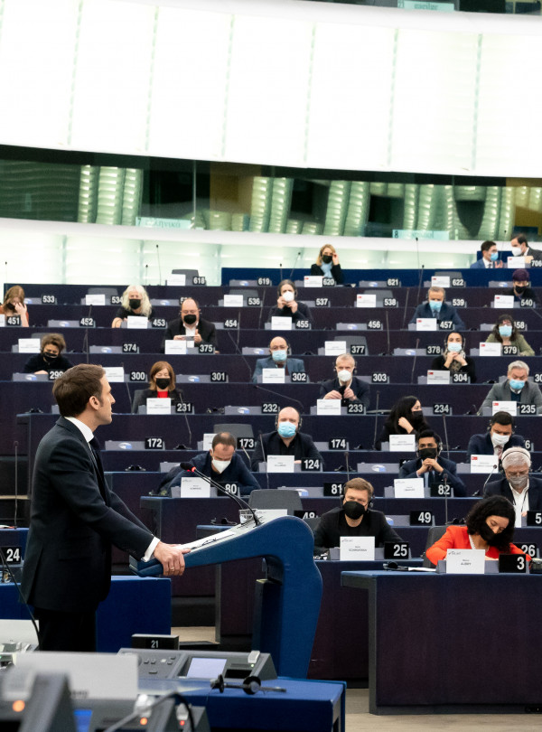
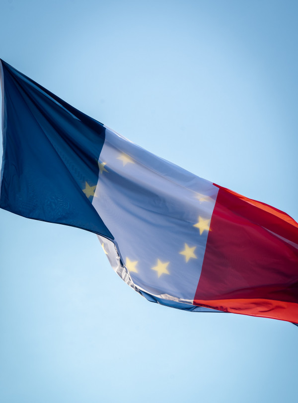

19 janvier 2022
Une Europe plus souveraine, plus verte, plus numérique, plus sociale, plus humaine. Voilà nos objectifs !
(Re)voir le discours du Président Emmanuel Macron au Parlement européen.

11 mars 2022
Sommet de Versailles de 10 et 11 mars
Dans le cadre de la présidence française du Conseil de l’Union européenne, le Sommet de Versailles a réuni les chefs d’État et de gouvernement de l’Union européenne, la Présidente de la Commission européenne et le Président du Conseil européen.